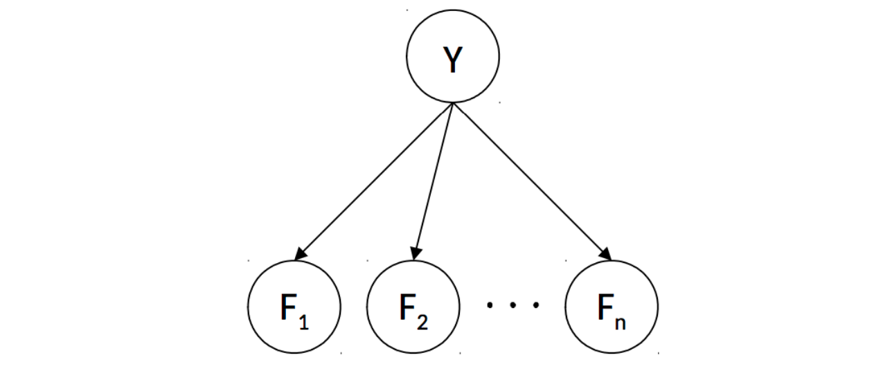
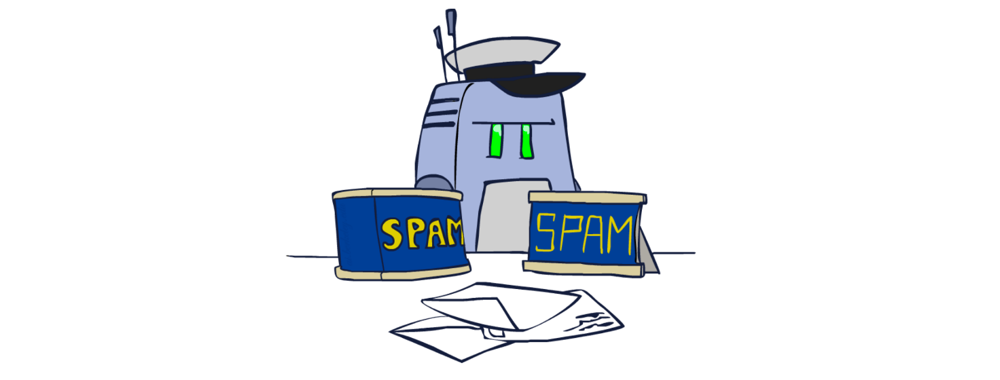
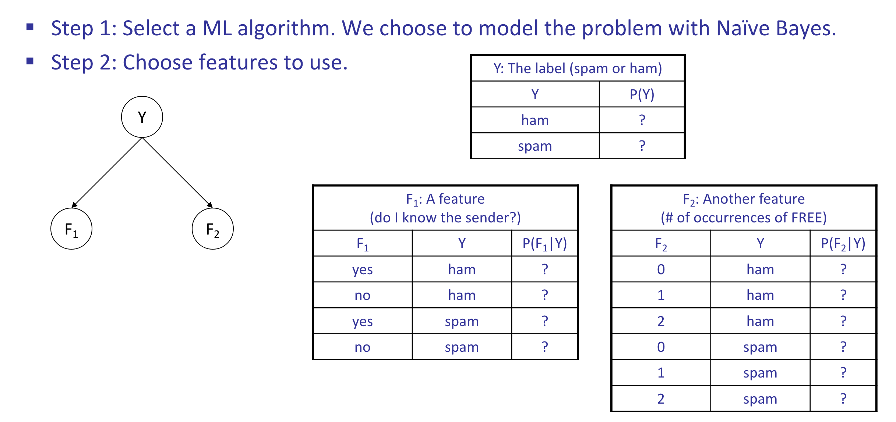
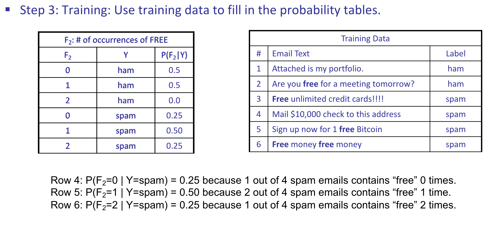
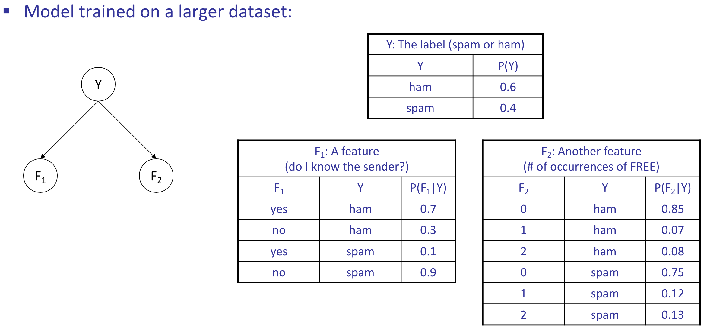
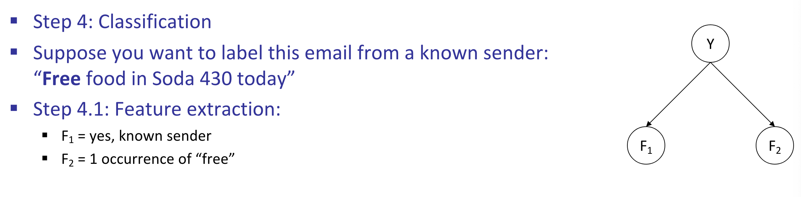
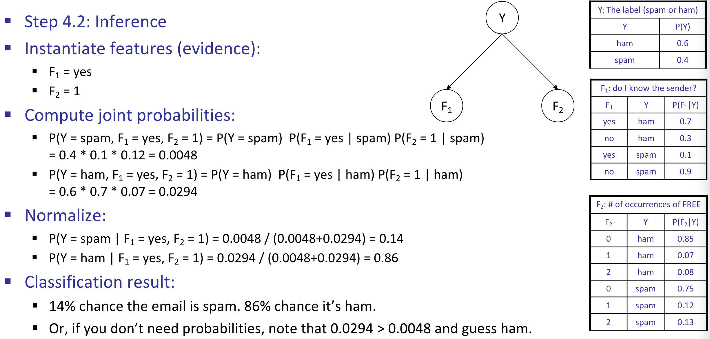

ML: Naive Bayes
Machine Learning
Machine Learning
A broad field of computer science that deals with constructing and/or learning the parameters of a specified model given some data.
Two primary subgroups of machine learning algorithms:
- Supervised Learning: Infer a relationship between input data and corresponding output data in order to predict outputs for new, previously unseen inputs.
- Unsupervised Learning: Given input data that does not have corresponding output data, deal with recognizing inherent structure between or within datapoints and grouping and/or processing them accordingly.
In this note, the algorithms we’ll discuss will be limited to supervised learning tasks.
Once you have a dataset that you’re ready to learn with, the machine learning process usually involves splitting your dataset into three distinct subsets:
- Training Set: is used to actually generate a model mapping inputs to outputs.
- Validation Set: is used to measure your model’s performance on data it hasn’t seen before, and to tune hyperparameters (parameters that are not learned by the model, but are set by the user).
- Test Set: never seen by your model until the very end of development, and is equivalent of a "final exam" to gauge performance on real-world data.
Naive Bayes
Classification Problem
Given various data points, our goal is to group them into one of two or more classes. For classification problems, we're given a training set of data points along with their corresponding labels, which are typically one of a few discrete values.
In this section we'll describe how to construct a type of model for solving classification problems known as a Naive Bayes Classifier.
In order to learn anything useful, we need to extract certain attributes from each of them known as features.
The specific features extracted for training are often dependent on the specific problem you’re trying to solve and which features you decide to select can often impact the performance of your model dramatically. Deciding which features to utilize is known as feature engineering and is fundamental to machine learning.

- Random Variables in this Bayes' net
- \(Y\): the class label
- \(F_1, F_2, \ldots, F_n\): the features
- Probability tables in this Bayes’ net
- \(P(Y)\): Probability of each label occurring, given no information about the features - known as the prior.
- \(P(F_i|Y)\): One table per feature. Probability distribution over a feature given a class label.
- To perform training:
- Use the training dataset to estimate the probability tables.
- Estimate \(P(Y)\): how often does each label occur?
- Estimate \(P(F_i|Y)\): how does the label affect the feature?
- To perform classification:
- Instantiate all features.
- Query for \(P(Y \mid f_1, f_2, \ldots, f_n)\). Probability of each label given the features.
Example: Spam Filtering

    
After noting that our desired probabilities - the probability of each label \(y_i\) given our features, \(P\left(Y=y_i \mid F_1=f_1, \ldots, F_n=f_n\right)\) - is proportional to the joint \(P\left(Y=y_i, F_1=f_1, \ldots, F_n=f_n\right)\), we can compute:
Our prediction for class label corresponding to the feature vector \(F\) is simply the label corresponding to the maximum value in the above computed vector:
Parameter Estimation
Assume you have a set of N sample points or observations, \(x_1, \ldots, x_N\), and you believe that this data was drawn from a distribution parameterized by an unknown value \(\theta\).
How can you "learn" the most likely value of \(\theta\) given your sample?
A frequently used and fundamental method in machine learning known as Maximum Likelihood Estimation (MLE) does exactly this.
Maximum likelihood estimation typically makes the following simplifying assumptions:
- Each sample is drawn from the same distribution.
- Each sample \(x_i\) is conditionally independent of the others, given the parameters for our distribution. In the coin flipping example, the outcome of one flip does not affect any of the others.
- All possible values of \(\theta\) are equally likely before observing the data. This is known as a uniform prior.
The first two assumptions are often referred to as independent, identically distributed (i.i.d.).
The likelihood \(\mathscr{L}(\theta)\) of our sample, a function which represents the probability of having drawn our sample from our distribution. For a fixed sample \(x_1, x_N\), the likelihood is just a function of \(\theta\) :
Using our simplifying assumption that the samples \(x_i\) are i.i.d., the likelihood function can be re-expressed as follows:
The maximum likelihood estimate for \(\theta\) is a value that satisfies the following:
Maximum Likelihood for Naive Bayes
Let’s now return to the problem of inferring conditional probability tables for our spam classifier.
For simplicity, let's specifically consider \(P\left(F_i \mid Y=\right.\) ham \()\) and try to find the maximum likelihood estimate for a parameter \(\theta=P\left(F_i=1 \mid Y=h a m\right)\) i.e. the probability that the \(i^{t h}\) word in our dictionary appears in a ham email.
(\(f_i^{(j)}\) is 1 if the \(i^{t h}\) word in the \(j^{t h}\) email is present, and 0 otherwise.)
Because \(\log\) is a monotonic function, maximizing the likelihood is equivalent to maximizing the log likelihood:
According to our formula above, the maximum likelihood estimate for \(\theta\) (which, remember, is the probability that \(P\left(F_i=1 \mid Y=h a m\right)\)) corresponds to counting the number of ham emails in which word i appears and dividing it by the total number of ham emails.
Smoothing
Warning
Though maximum likelihood estimation is a very powerful method for parameter estimation, bad training data can often lead to unfortunate consequences.
For example, if every time the word “minute” appears in an email in our training set, that email is classified as spam, our trained model will learn that
Hence your model will never classify any email containing the word minute as ham.
This is a classic example of overfitting, or building a model that doesn’t generalize well to previously unseen data.
Overfitting with Naive Bayes’ classifiers can be mitigated by Laplace Smoothing. Conceptually, Laplace smoothing with strength \(k\) assumes having seen \(k\) extra of each outcome. Hence if for a given sample your maximum likelihood estimate for an outcome \(x\) that can take on \(|X|\) different values from a sample of size \(N\) is:
then the Laplace estimate with strength \(k\) is
There are two particularly notable cases for Laplace smoothing. When \(k = 0\), Laplace smoothing is equivalent to maximum likelihood estimation. When \(k = \infty\):
The specific value of \(k\) that’s appropriate to use in your model is typically determined by trial-and-error. \(k\) is a hyperparameter in your model, which means that you can set it to whatever you want and see which value yields the best prediction accuracy/performance on your validation set.